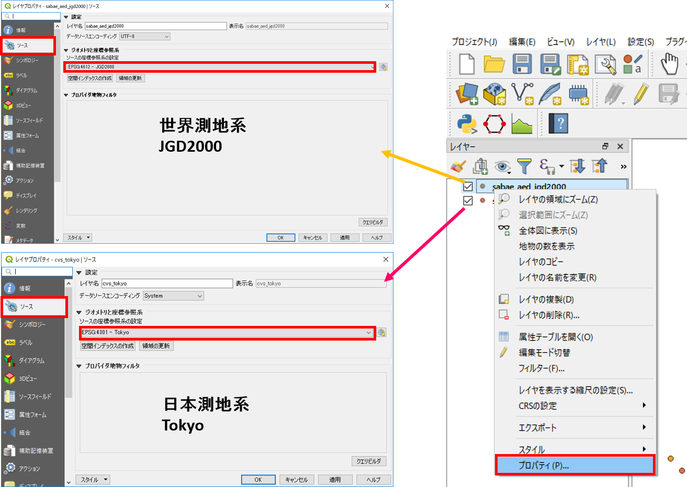
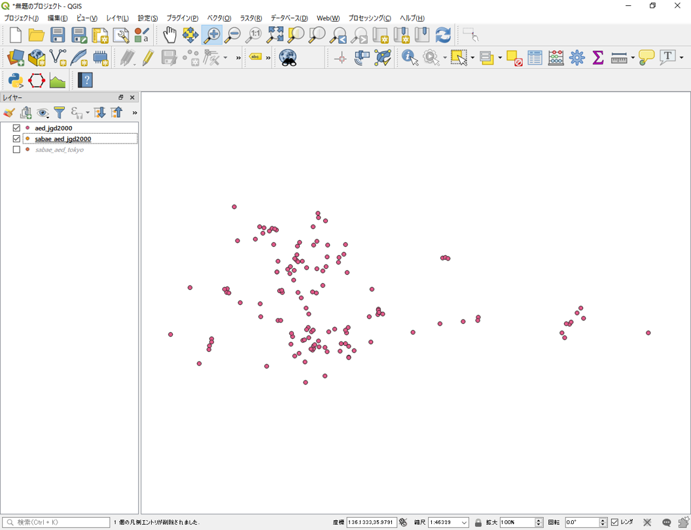
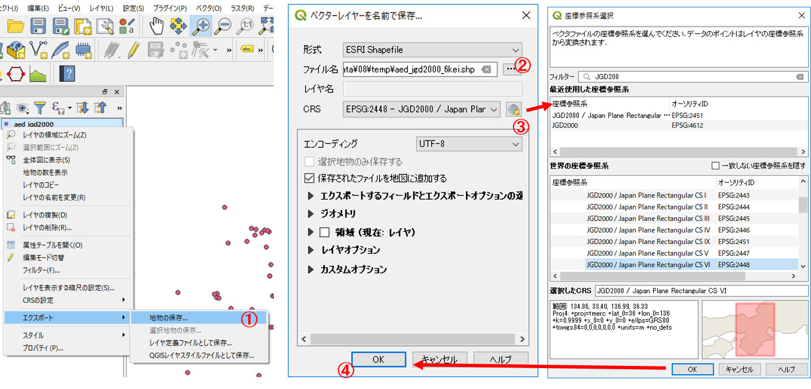
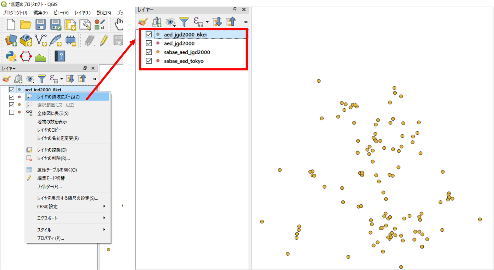
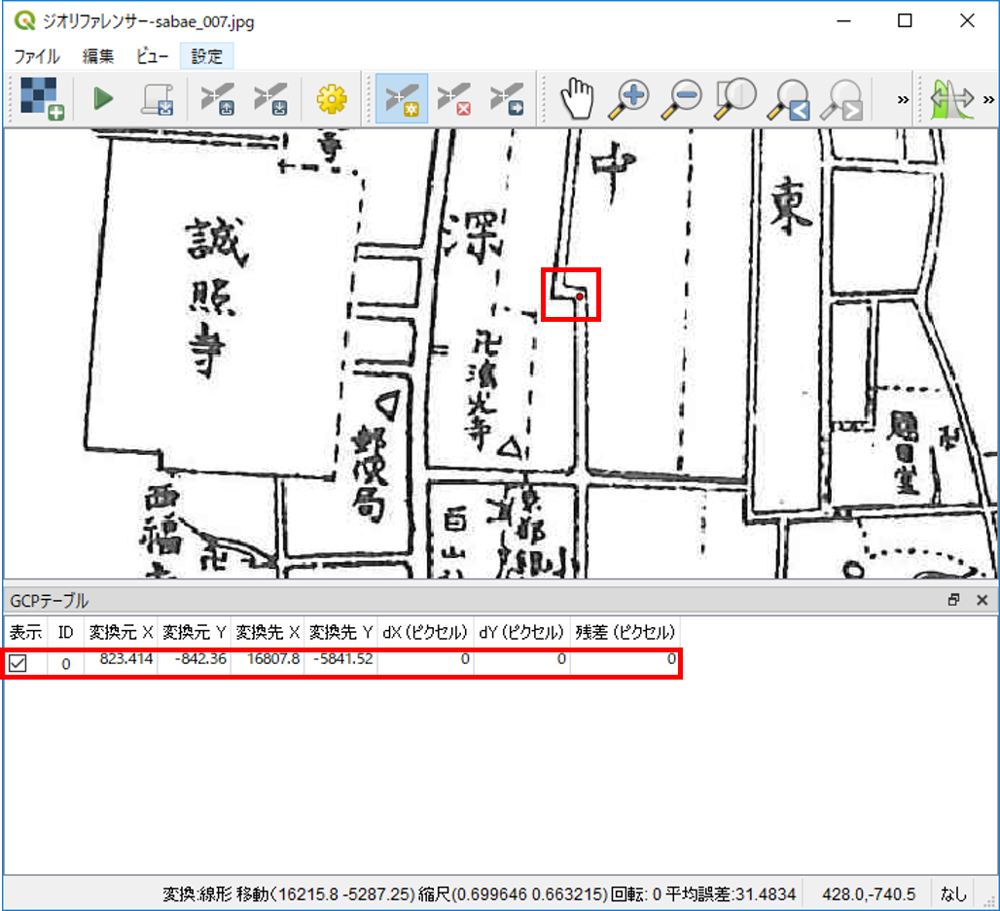
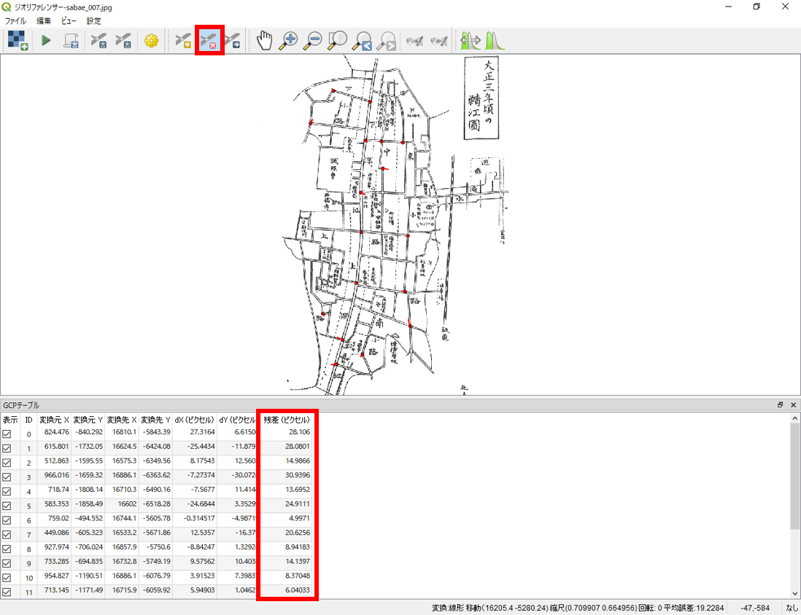
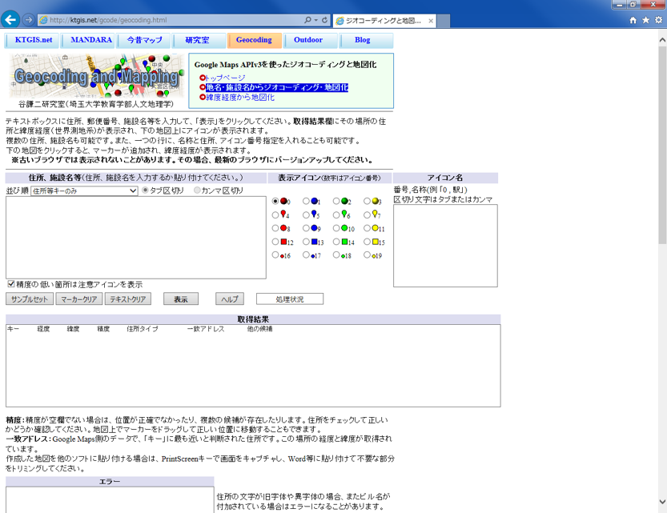
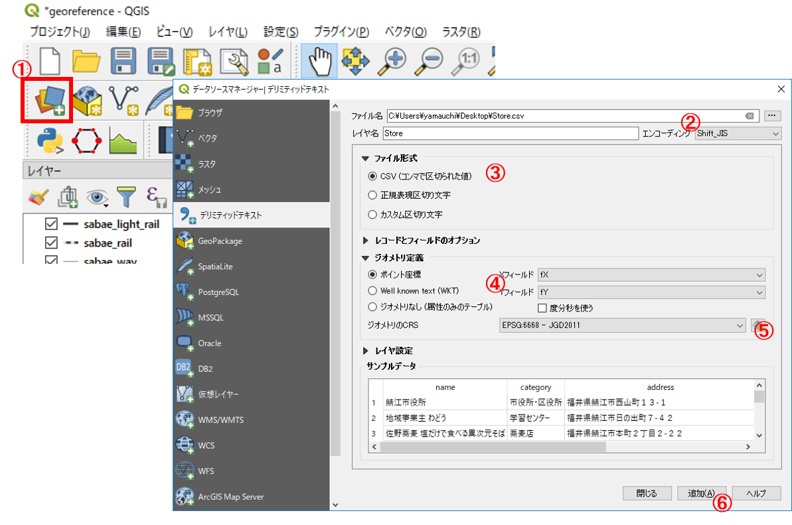
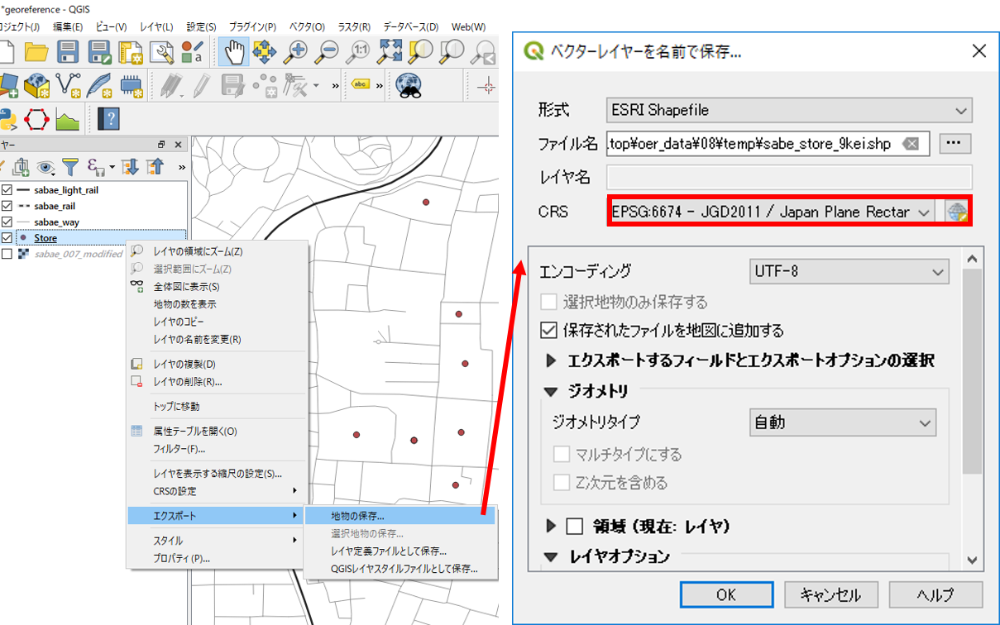
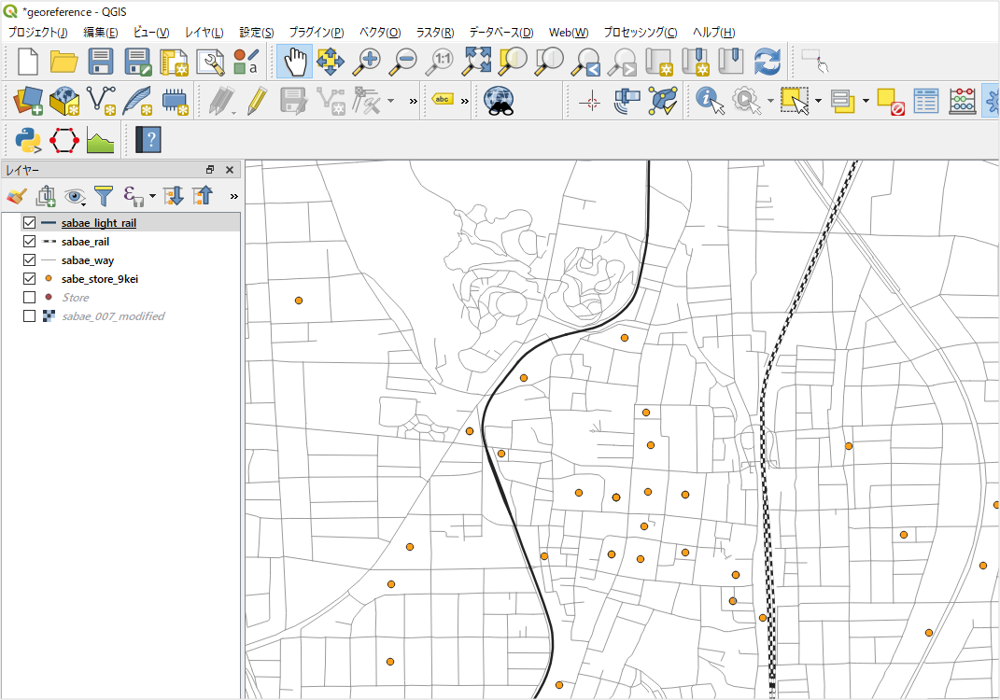

空間データ
本教材は、「空間データ」の実習用教材です。GISソフトウェア（QGIS）を用いて、空間座標の変換、ジオリファレンス、ジオコーディングについて解説しています。講義用教材として、地理情報科学教育用スライド（GIScスライド）の3章が参考になります。
課題形式で使用する場合は、本教材を一読した後、課題ページへお進みください。GIS初学者は、本教材を進める前にGISの基本概念の教材を確認しておいてください。本教材を使用する際は、利用規約をご確認いただき、これらの条件に同意された場合にのみご利用下さい。
Menu
実習用データ
実習をはじめる前に、Sabaeをダウンロードしてください。
スライド教材
本教材は、スライド_空間データとしても、ご利用いただけます。
空間座標の変換
地理空間情報（GISで扱うことのできるデータ）は、測地系と座標系に基づいた位置情報を保持しています。測地系や座標系は様々なものがあります。そのため、複数のデータを処理する場合は、各データの座標系を統一する必要があります。その際に、空間座標の変換を行います。以下では、QGISを用いた変換手法を解説しています。空間座標系についての解説は、地理情報科学教育用スライド（GIScスライド）の3章やGISの基本概念の教材を参照してください。また、この実習を始める前に、以下の座標変換の正誤事例を参照し、今後の作業で誤った座標変換を行わないように注意してください。
※以下の教材で使用しているQGIS3.4では、JGD2011の変換のエラーがあるため、JGD2011のデータに対してJGD2000を割り当てている点に注意してください。
測地系変換
Sabaeをダウンロードし、以下の手順に従って、sabae_aed_tokyo（日本測地系 緯度経度）とsabae_aed_jgd2000（世界測地系 緯度経度）のシェープファイルをQGISに読み込む。

- データソースマネージャを開く。
- エンコーディングをUTF-8に設定し、ソースから、ダウンロードした日本測地系と世界測地系のshape（sabae_aed_jgd2000とsabae_aed_tokyo）を指定する。
- 「追加」 をクリックする。
この際に、QGISが自動で、擬似的な位置あわせをしてしまうため、オンザフライ投影の機能をオフにする。

- 右下のEPSGのボタンをクリックする。
- 投影なしにチェックをつけ、オンザフライ投影を無効にする。
以下のように、データは同じ場所のものにもかかわらず、座標系が異なるためずれて表示されることを確認する。

それぞれのレイヤの上で右クリックして、プロパティ（ソースのタブ）から座標系を確認する。 
以下の手順で、日本測地系を世界測地系へ変換する。

- プロパティ＞エクスポート＞地物の保存をクリックする 。

- 新規レイヤの出力先と名前を選択する。
- CRSを選択するために、図中の③をクリックし、フィルターからJGD2000を検索し、OKをクリックする。
- OKをクリックする。
以下のように、測地系がJGD2000に変換された。 
投影変換
以下では、地理座標系のデータを投影座標系の平面直角座標系へ変換する手法について解説する。世界測地系緯度経度のデータを用いて、以下の処理を行う。 
- プロパティ＞エクスポート＞地物の保存をクリックする。
- 新規レイヤの出力先と名前を選択する。
- CRSのボタンをクリックし、変更したいCRSを選択（JGD2000 / Japan Plane Rectangular CS Ⅵ）してOKをクリックする。
- OKをクリックする。
以下のように、座標系が（JGD2000 / Japan Plane Rectangular CS Ⅵ）に変換された。座標系が変換したため、レイヤが重なって表示されないことを確認する。 
※世界測地系の平面直角座標系へ変換する場合に、地域によって○○系と指定する必要がある。詳しくは、国土地理院の[平面直角座標系の対応表]を参考にする。
※空間座標の変換のよくある間違いとして、新規にデータを作成せず、プロパティ（一般情報）の空間参照システムからCRSを選択する等があるため、今後同様の処理を実行するときに注意する。
ジオリファレンス
ジオリファレンスは、位置情報をもたない画像などのデータに位置情報を持たせる際に用いる手法です。以下では、実習用データのsabae内の007.jpgを用いて、QGISのジオリファレンサーで、位置合わせを行う手法について解説します。
QGISを起動し、実習を始める前にあらかじめダウンロードしておいたSabaeから、sabae_light_railとsabae_rail、sabae_wayを読み込む。ジオリファレンス用のGCP(Ground Control Point)を作成するため、ラスタ>ジオリファレンサーを起動する。

「ラスタ」のタブを開いても「ジオリファレンサー」の項目がない場合は、プラグイン＞プラグインの管理とインストール＞インストール済から、GDALジオリファレンサーにチェックをつける
ジオリファレンサーが起動できたら、以下の手順でラスタデータを読み込む。

- ラスタの読み込みボタンをクリックし、007.jpgを選択する。
- 座標系を選択し、OKをクリックする。※今回はEPSG6674に設定する。
以下のように、ジオリファレンサーにラスタデータが表示される。

GCPの作成
ジオリファレンスをする場合、位置情報を示すGCP(Ground Control Point)が必要となります。GCPは画像の端と中心のあたりに設置し、おおまかな位置合わせをした後、偏りがでないように細部に作成してく。以下では、その手法について解説する。
ラスタデータに位置情報を付加するために、以下の手順でGCPを設置する。

- ポイントの追加をクリックする（削除する際は、右隣のボタン、地図の移動は手のボタンを用いる）。
- ジオリファレンサーで入力したラスタ（古地図）の代表点（事前に読み込んだ道路データと古地図で類似する地点）をクリックする。
マップキャンバスよりをクリックする。(※座標が分かっている場合は座標値を入力)- QGISに読み込んだ道路データをベースに、ジオリファレンサーのラスタと同じ位置の代表点をクリックする。
ジオリファレンサーで表示されたラスタの上にGCP（座標値をもった点）が表示され、GCPテーブルに詳細が表示される。 
この作業を繰り返し、GCPを増やしていく。ここでは、ある部分のみGCPが集中しすぎるということが、起きないように注意しながら作業を進める。また、GCPテーブルのresidualの値の大きいものを削除すると上手く合う場合がある。

ラスタの出力
GCPの設置が完了したら、以下の手順で位置情報をもった画像の出力を実行する。

- 変換の設定をクリックする。
- 変換タイプは線形を選択する。
- リサンプイングは線形を選択する。
- 変換先SRSを選択する。
- 新規レイヤの出力先と名前を出力する。
- 「完了時にQGISにロードする」にチェックを入れる。
- OKをクリックする。
右向きの三角ボタンをクリックすると、QGISに画像が表示される。

下の図のように、古地図に位置情報を付加した後に、画像とベクトルデータを重ね合わせ、精度を確認する。

精度が十分でない場合は、残差の値を参考に、ポイントの削除や追加を行い、再度画像を出力する。 
ジオコーディング
ジオコーディングは、住所や緯度経度などの情報から、GISで扱えるデータ等を作成する手法です。以下では、鯖江市内の店舗のデータ(sabae_store.csv)を用いて、住所と経緯度の情報からジオコーディングする手法について、2つのWEBサイトを利用して解説しています。
Google Maps Geocoding APIを利用する
住所からジオコーディングする
Google Maps Geocoding APIを利用したサイトにアクセスし、鯖江市内の店舗の住所を用いてマッピングを行う。
Google Maps Geocoding APIを利用した、位置情報取得サイトはいくつかある。以下では、埼玉大学の谷謙二先生が提供しているKTGIS.netのジオコーディングサービスの利用法について解説する。 
KTGIS.netにアクセスし、上のタブから「Geocoding」をクリックし、「地名・施設名からジオコーディング・地図化」をクリックする。
住所情報をもとにジオコーディングをする。

- 避難所をまとめたCSVをExcelで開き、コピーした住所を上の図の①の個所に張り付ける。
- 「住所変換」をクリックする。
下の図のように、サイトの下段にある地図の上にポイントが表示される。このサイトでは、情報出力テキストボックスから、マーカーの緯度経度、KMLデータ、最近隣距離などの出力もできる。

CSVアドレスマッチングサービスを利用する
経緯度からジオコーディングする
東京大学空間情報科学研究センターが提供するCSVアドレスマッチングサービスを利用して、住所から緯度経度を求めることができる。以下では、その手法について解説する。
sabae_store.csvの住所情報をもとに以下の手順で、ジオコーディングを実行する。

- 全国街区レベル（緯経度・世界測地系）を選択する。
- 住所を含むカラムに
3を入力（エクセルでみたときの住所が入っている箇所に相当する）する。 - シフトJISコード（SJIS）を選択する。
- 避難所をまとめたCSVを選択する。
- 送信をクリックする。その後、保存のウインドウが表示されるため、データを保存する。
QGISで緯度経度つきのCSVデータを表示する
以下では、アドレスマッチングで取得したデータをQGISで表示する手法について解説する。 
- データソースマネージャー＞デリミティッドテキストを選択する。
- 緯度経度を出力したcsvを指定し、エンコーディングをShift-JISにする。
- CSVにチェックを入れる。
- X,Yフィールドを指定する。
- JGD2011を選択する。
- 追加をクリックする。
座標系は地理座標系で出力されるため、投影座標系に変換する。 
- プロパティ＞エクスポート＞地物の保存をクリックする。
- 形式をESRI Shapefileとし、出力先とファイル名を指定する。
- 世界測地系平面直角6系を指定し、OKをクリックする。
以下のように、鯖江市内の店舗が地図上に表示される。 
この教材の課題ページ_空間データへ進む
ライセンスに関する注意事項
本教材で利用しているキャプチャ画像の出典やクレジットについては、その他のライセンスについてよりご確認ください。
教材の利用に関するアンケート
本プロジェクトでは、教材の改良を目的とした任意アンケートを実施しています。ご協力いただける方は、アンケートにお進みください。ご協力のほどよろしくお願いいたします。※ 本アンケートの成果は、教材の改良のほか、学会での発表等の研究目的でも利用します。また、本アンケートでは、個人が特定できるような質問は設けておりません。